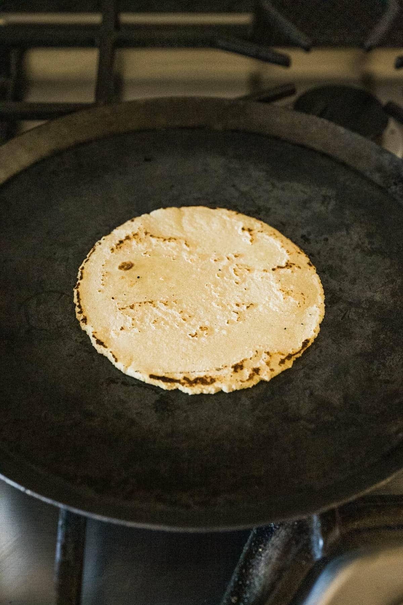

Corn Tortillas
Corn-Tortillas • Makes 10–12 • Bread

Properly nixtamalized corn tortillas—just masa harina, water, salt, and heat. When you treat the process with respect, you don't need enrichment, gums, or preservatives; the nutrition and flavor are already built in.
What Is Nixtamalization?
Nixtamalization is the traditional process of cooking dried corn in water with lime (calcium hydroxide), soaking, rinsing, and then grinding into masa. It:
- Unlocks niacin and improves mineral absorption
- Makes corn more digestible
- Changes starch structure so the dough binds and puffs properly
- Creates the aroma and flavor of real corn tortillas
Sourcing Ingredients
Use masa harina or fresh masa that is 100% nixtamalized corn with lime and nothing else. Avoid enriched or heavily fortified products that signal shortcuts in processing.
Ingredients
- 2 cups masa harina (100% nixtamalized corn)
- 1½ cups warm water
- ½ tsp salt (optional)
Method
1. Make the dough
- In a bowl, combine masa harina and salt.
- Slowly add the warm water, mixing until a soft dough forms.
- Knead gently for 1–2 minutes; the dough should feel like soft Play-Doh.
- Cover and rest 10–15 minutes.
2. Shape
- Divide the dough into 10–12 balls.
- Press each ball between parchment or plastic in a tortilla press (or under a heavy pan) until thin.
3. Cook
- Heat a dry skillet or comal over medium-high heat.
- Cook each tortilla 45–60 seconds per side, until lightly charred and flexible.
- Stack cooked tortillas in a towel to keep warm.
Troubleshooting
- Cracking edges → dough too dry; add a splash of water.
- Sticky dough → too wet; dust lightly with masa.
- No puff → pan not hot enough or tortillas too thick.
Storage
- Best the same day
- Fridge: up to 3 days
- Freezer: up to 2 months (with parchment between tortillas)
Reheat: Always rewarm on a hot skillet or comal—never straight from fridge to plate. Heat is what brings the texture back.